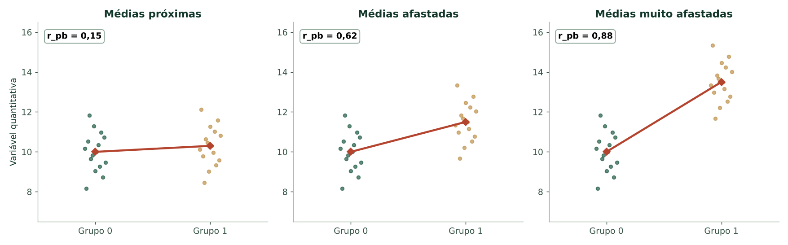
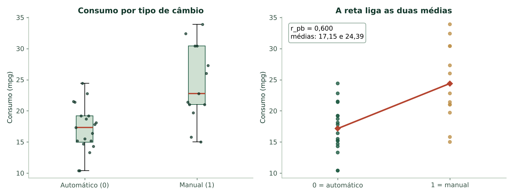

Correlação ponto-bisserial
Mede a associação entre uma variável binária e uma variável quantitativa; equivale a comparar as médias de dois grupos.
Comece por aqui
E quando uma das variáveis tem apenas duas categorias, como aprovado ou reprovado, peça com defeito ou sem defeito, câmbio manual ou automático? Basta codificar as categorias como 0 e 1 e calcular a correlação de Pearson. O resultado recebe um nome próprio, correlação ponto-bisserial, e tem uma leitura simples: mede o quanto as médias dos dois grupos se afastam, em relação à variabilidade total.
O que é o coeficiente
A correlação ponto-bisserial (\(r_{pb}\)) é o coeficiente de Pearson calculado entre uma variável dicotômica, codificada como 0 e 1, e uma variável quantitativa. Como só existem dois valores no eixo horizontal, a “reta” liga as médias dos dois grupos: quanto mais distantes as médias, em relação à dispersão dos dados, maior o coeficiente.

Use a ponto-bisserial quando a dicotomia é genuína (dois tipos de câmbio, duas máquinas). Use a bisserial quando a variável binária resulta do corte de uma variável contínua e normal (por exemplo, aprovado ou reprovado a partir de uma nota).
Pressupostos e como verificá-los
| Pressuposto | Por que importa | Como verificar |
|---|---|---|
| Uma variável dicotômica genuína e uma quantitativa | Definição do coeficiente. | Tipo das variáveis. |
| Observações independentes | Condição do teste. | Delineamento (para dados pareados, use o teste t pareado). |
| Normalidade da variável quantitativa em cada grupo | Validade do teste t em amostras pequenas. | Q–Q e Shapiro–Wilk por grupo. |
| Variâncias semelhantes nos dois grupos | O teste equivale ao t de Student, que supõe variâncias iguais. | Levene–Brown–Forsythe e razão entre os desvios-padrão. |
| Grupos não muito desbalanceados | O valor máximo de r_pb diminui quando um grupo é muito menor. | table(grupo). |
Hipóteses e estatística de teste
Em que:
- \(r_{pb}\)
- coeficiente de correlação ponto-bisserial
- \(\bar y_1,\ \bar y_0\)
- médias da variável quantitativa nos grupos codificados como 1 e 0
- \(n_1,\ n_0\)
- tamanhos dos dois grupos; \(n=n_1+n_0\)
- \(s_n\)
- desvio-padrão de todos os valores de y, com divisor \(n\)
- \(\mu_1,\ \mu_0\)
- médias populacionais dos dois grupos
- \(t\)
- estatística de teste, idêntica à do teste t de Student para duas amostras independentes com variâncias iguais
Exemplo numérico, passo a passo (n = 6)
Grupo 0: 2, 4, 6. Grupo 1: 5, 7, 9.
Médias: \(\bar y_0=4\), \(\bar y_1=7\) e média geral \(\bar y=5{,}5\).
Soma de quadrados total: \(12{,}25+2{,}25+0{,}25+0{,}25+2{,}25+12{,}25=29{,}5\) ⇒ \(s_n=\sqrt{29{,}5/6}=2{,}217\).
\(r_{pb}=\dfrac{7-4}{2{,}217}\sqrt{\dfrac{3\times3}{36}}=1{,}353\times0{,}5=0{,}677\).
\(t=0{,}677\sqrt{4/(1-0{,}458)}=1{,}837\), com 4 g.l. ⇒ \(p=0{,}140\).
Propriedades, valor-p e intervalo de confiança
- \(-1\leq r_{pb}\leq1\). O sinal depende apenas de qual categoria recebe o código 1: positivo quando esse grupo tem a maior média.
- O valor-p é idêntico ao do teste t de Student para duas amostras independentes.
- \(r_{pb}^2\) é a proporção da variabilidade de y associada à diferença entre os grupos (igual ao eta-quadrado da ANOVA com dois grupos).
- Relação com o d de Cohen, para grupos de mesmo tamanho: \(r_{pb}=d/\sqrt{d^2+4}\).
- Com grupos desbalanceados, o valor máximo alcançável fica abaixo de 1, o que dificulta comparar coeficientes entre estudos.
- O intervalo de confiança pode ser obtido pela transformação z de Fisher, como no Pearson.
Como interpretar os resultados
| Resultado | Leitura |
|---|---|
| r_pb positivo | O grupo codificado como 1 tem média maior. |
| r_pb negativo | O grupo codificado como 0 tem média maior. |
| |r_pb| grande | Médias bem separadas em relação à dispersão total. |
| p < 0,05 | Evidência de diferença entre as médias dos grupos. |
| r_pb² | Fração da variabilidade associada ao grupo. |
| Valor | Descrição convencional | Observação |
|---|---|---|
| 0,10 | Associação pequena | Pode ser relevante em fenômenos com muitas causas. |
| 0,30 | Associação moderada | |
| 0,50 ou mais | Associação grande | Em calibração de instrumentos, exige-se muito mais (acima de 0,99). |
Esses pontos de referência (COHEN, 1988) são convenções das ciências do comportamento. A interpretação depende sempre da área e do objetivo.
Informe sempre como a variável binária foi codificada e reporte, junto com o coeficiente, as médias e os desvios-padrão de cada grupo.
Como executar no R e em Python
Onde executar o código em Python
Não é preciso instalar nada: o Google Colab é um computador na nuvem, gratuito, que executa Python pelo navegador e já traz as bibliotecas usadas aqui (numpy, scipy e matplotlib).
Não é preciso função especial: cor.test(), do pacote stats (já instalado com o R), calcula a correlação ponto-bisserial quando uma das variáveis está codificada como 0 e 1. Se a variável for um fator, converta antes, por exemplo com as.numeric(fator) - 1.
cor.test(mtcars$am, mtcars$mpg)
Exemplo de aplicação
Contexto dos dados
No conjunto mtcars, am indica o tipo de câmbio (0 = automático, 1 = manual) e mpg é o consumo em milhas por galão. Queremos medir a associação entre o tipo de câmbio e o consumo.
Código em R
# Correlação ponto-bisserial: exemplo completo ----
# Pacote: apenas o stats (já vem com o R). Dados: mtcars.
# 1. Dados: câmbio (am: 0 = automático, 1 = manual) e consumo (mpg)
grupo <- mtcars$am
y <- mtcars$mpg
n <- length(y)
# 2. Descritivas por grupo
aggregate(y ~ grupo, FUN = function(v) c(n = length(v), media = mean(v), dp = sd(v)))
# 3. Gráfico
boxplot(y ~ grupo, names = c("Automático (0)", "Manual (1)"),
col = "gray85", xlab = "", ylab = "Consumo (mpg)")
# 4. Correlação ponto-bisserial: é o Pearson com a variável binária codificada em 0/1
resultado <- cor.test(grupo, y)
print(resultado)
# 5. Cálculo pela fórmula
m1 <- mean(y[grupo == 1]); m0 <- mean(y[grupo == 0])
n1 <- sum(grupo == 1); n0 <- sum(grupo == 0)
s_n <- sqrt(mean((y - mean(y))^2)) # desvio-padrão com divisor n
(m1 - m0) / s_n * sqrt(n1 * n0 / n^2)
# 6. Equivalência com o teste t de Student (variâncias iguais)
t.test(y ~ grupo, var.equal = TRUE)
# 7. Pressupostos: normalidade em cada grupo e teste t de Welch
tapply(y, grupo, function(v) shapiro.test(v)$p.value)
t.test(y ~ grupo) # Welch (variâncias desiguais)
A mesma análise em Python, com os resultados
Cole o código em um notebook do Google Colab ↗ e execute com Shift+Enter. Os valores abaixo são a saída desse código.
# Bibliotecas: numpy, scipy e matplotlib (já instaladas no Google Colab)
import numpy as np
from scipy import stats
import matplotlib.pyplot as plt
# Dados do conjunto mtcars: câmbio (am: 0 = automático, 1 = manual) e consumo (mpg)
am = np.array([1, 1, 1, 0, 0, 0, 0, 0, 0, 0, 0, 0, 0, 0, 0, 0, 0, 1, 1, 1, 0, 0, 0, 0, 0, 1, 1, 1, 1, 1, 1, 1])
mpg = np.array([21, 21, 22.8, 21.4, 18.7, 18.1, 14.3, 24.4, 22.8, 19.2, 17.8, 16.4, 17.3, 15.2, 10.4, 10.4, 14.7, 32.4, 30.4, 33.9, 21.5, 15.5, 15.2, 13.3, 19.2, 27.3, 26, 30.4, 15.8, 19.7, 15, 21.4])
n = len(mpg)
# 1. Descritivas por grupo
g0, g1 = mpg[am == 0], mpg[am == 1]
print(f"Automático (0): n = {len(g0)}, média = {g0.mean():.4f}, DP = {g0.std(ddof=1):.4f}")
print(f"Manual (1): n = {len(g1)}, média = {g1.mean():.4f}, DP = {g1.std(ddof=1):.4f}")
# 2. Correlação ponto-bisserial
res = stats.pointbiserialr(am, mpg)
r = res.statistic
t = r * np.sqrt((n - 2) / (1 - r**2))
print(f"\nr_pb = {r:.5f} | t = {t:.4f}, gl = {n - 2}, p-valor = {res.pvalue:.6f}")
# 3. Cálculo pela fórmula
s_n = mpg.std(ddof=0) # desvio-padrão com divisor n
r_formula = (g1.mean() - g0.mean()) / s_n * np.sqrt(len(g1) * len(g0) / n**2)
print(f"Fórmula: ({g1.mean():.4f} - {g0.mean():.4f}) / {s_n:.4f} x raiz({len(g1)} x {len(g0)} / {n}²) = {r_formula:.5f}")
# 4. Equivalências: Pearson com variável 0/1 e teste t de Student (variâncias iguais)
print(f"Pearson(am, mpg) = {stats.pearsonr(am, mpg).statistic:.5f}")
tt = stats.ttest_ind(g1, g0, equal_var=True)
print(f"Teste t de Student: t = {tt.statistic:.4f}, p-valor = {tt.pvalue:.6f}")
tw = stats.ttest_ind(g1, g0, equal_var=False)
print(f"Teste t de Welch: t = {tw.statistic:.4f}, p-valor = {tw.pvalue:.6f}")
# 5. Intervalo de confiança de 95% (z de Fisher) e r²
z = np.arctanh(r); ep = 1 / np.sqrt(n - 3); zc = stats.norm.ppf(0.975)
ic = np.tanh([z - zc * ep, z + zc * ep])
print(f"IC 95% = [{ic[0]:.4f}; {ic[1]:.4f}] | r² = {r**2:.4f}")
# 6. Pressupostos: normalidade em cada grupo e igualdade de variâncias
for nome, g in [("automático", g0), ("manual", g1)]:
W, pw = stats.shapiro(g)
print(f"Shapiro-Wilk ({nome}): W = {W:.4f}, p-valor = {pw:.4f}")
lv = stats.levene(g0, g1, center="median")
print(f"Brown-Forsythe: W = {lv.statistic:.4f}, p-valor = {lv.pvalue:.4f}")
# 7. Exemplo do texto (n = 6)
x = np.array([0, 0, 0, 1, 1, 1]); y = np.array([2, 4, 6, 5, 7, 9.])
r6 = stats.pointbiserialr(x, y)
print(f"\nn = 6: r_pb = {r6.statistic:.4f}, p-valor = {r6.pvalue:.4f}")
# 8. Gráfico
plt.boxplot([g0, g1]); plt.xticks([1, 2], ["Automático (0)", "Manual (1)"]); plt.ylabel("Consumo (mpg)"); plt.show()
Resultados da execução
Automático (0): n = 19, média = 17.1474, DP = 3.8340 Manual (1): n = 13, média = 24.3923, DP = 6.1665 r_pb = 0.59983 | t = 4.1061, gl = 30, p-valor = 0.000285 Fórmula: (24.3923 - 17.1474) / 5.9320 x raiz(13 x 19 / 32²) = 0.59983 Pearson(am, mpg) = 0.59983 Teste t de Student: t = 4.1061, p-valor = 0.000285 Teste t de Welch: t = 3.7671, p-valor = 0.001374 IC 95% = [0.3176; 0.7845] | r² = 0.3598 Shapiro-Wilk (automático): W = 0.9768, p-valor = 0.8987 Shapiro-Wilk (manual): W = 0.9458, p-valor = 0.5363 Brown-Forsythe: W = 4.1876, p-valor = 0.0496 n = 6: r_pb = 0.6765, p-valor = 0.1401

| Elemento | Valor | Leitura |
|---|---|---|
| Automático (0) | n = 19; média 17,15; DP 3,83 | |
| Manual (1) | n = 13; média 24,39; DP 6,17 | Média maior e dispersão maior. |
| r_pb | 0,600 | Associação positiva: o grupo codificado como 1 tem média maior. |
| t (30 g.l.) | 4,106 | Valor-p = 0,000285; igual ao do teste t de Student. |
| IC 95% | [0,318; 0,784] | Intervalo amplo: n pequeno. |
| r_pb² | 0,360 | 36% da variabilidade do consumo está associada ao tipo de câmbio. |
| Shapiro–Wilk por grupo | p = 0,899 e p = 0,536 | Sem evidência contra a normalidade. |
| Brown–Forsythe | W = 4,19; p = 0,0496 | Variâncias no limite da rejeição. |
| Teste t de Welch | t = 3,767; p = 0,0014 | Mesma conclusão sem supor variâncias iguais. |
Leitura: há associação entre o tipo de câmbio e o consumo: os carros de câmbio manual desta amostra percorrem, em média, 7,2 milhas por galão a mais. Como as variâncias dos grupos são diferentes (desvios-padrão de 3,83 e 6,17), o teste t de Welch é a referência mais segura para o valor-p; a conclusão se mantém. Atenção ao contexto: nesta amostra, os carros manuais são também mais leves, de modo que a diferença não pode ser atribuída apenas ao câmbio.
Erros comuns
| Erro | Como evitar |
|---|---|
| Esquecer de informar a codificação | O sinal só tem sentido sabendo qual grupo é 1. |
| Usar com variável dicotomizada artificialmente | Prefira a correlação bisserial ou, melhor, não dicotomize. |
| Tratar como análise diferente do teste t | São o mesmo teste; a correlação acrescenta uma medida de magnitude. |
| Ignorar variâncias desiguais | Confira com o teste t de Welch. |
| Comparar coeficientes entre amostras com proporções diferentes nos grupos | O valor máximo depende do balanceamento; reporte também o d de Cohen. |
| Aplicar a dados pareados | Use métodos para amostras dependentes. |
Alternativas e fluxo de trabalho
| Procedimento | Quando preferir |
|---|---|
| Correlação bisserial | A variável binária é o corte de uma contínua normal. |
| Teste t de Student / Welch | Interesse na diferença de médias e em seu intervalo de confiança. |
| Mann–Whitney com correlação bisserial por postos | Variável quantitativa assimétrica ou ordinal. |
| Regressão logística | A variável binária é a resposta a ser explicada. |
| d de Cohen | Medida de magnitude menos dependente do balanceamento. |
- Defina e registre a codificação 0/1.
- Faça boxplots por grupo.
- Verifique normalidade e variâncias.
- Calcule r_pb com o intervalo de confiança e reporte as médias dos grupos.
Referências desta ficha
- TATE, Robert F. Correlation between a discrete and a continuous variable. Point-biserial correlation. The Annals of Mathematical Statistics, v. 25, n. 3, p. 603-607, 1954.
- LEV, Joseph. The point biserial coefficient of correlation. The Annals of Mathematical Statistics, v. 20, n. 1, p. 125-126, 1949.
- COHEN, Jacob. Statistical power analysis for the behavioral sciences. 2. ed. Hillsdale: Lawrence Erlbaum, 1988.
- MORETTIN, Pedro Alberto; BUSSAB, Wilton de Oliveira. Estatística básica. 9. ed. São Paulo: Saraiva, 2017.
- HENDERSON, Harold V.; VELLEMAN, Paul F. Building multiple regression models interactively. Biometrics, v. 37, n. 2, p. 391-411, 1981. (Conjunto de dados
mtcars, pacotedatasetsdo R.) - R CORE TEAM. R: a language and environment for statistical computing. Vienna: R Foundation for Statistical Computing, 2026. Disponível em: https://www.r-project.org/. (Funções
cor.testet.test, pacotestats.) - POSIT TEAM. RStudio: integrated development environment for R. Boston: Posit Software, PBC. Disponível em: https://posit.co/download/rstudio-desktop/.
- VIRTANEN, Pauli et al. SciPy 1.0: fundamental algorithms for scientific computing in Python. Nature Methods, v. 17, p. 261-272, 2020. DOI: 10.1038/s41592-019-0686-2. (Funções do módulo
scipy.stats.) - HARRIS, Charles R. et al. Array programming with NumPy. Nature, v. 585, p. 357-362, 2020. DOI: 10.1038/s41586-020-2649-2.
- HUNTER, John D. Matplotlib: a 2D graphics environment. Computing in Science & Engineering, v. 9, n. 3, p. 90-95, 2007.
- GOOGLE. Google Colaboratory. Disponível em: https://colab.research.google.com/.
- As figuras desta ficha foram elaboradas pelo autor.

Prof. Dr. Cássius Henrique Xavier Oliveira
Professor · ICTIN/UFLA · Estatística, Confiabilidade e Ciência de Dados.
Conheça minha trajetória e projetos →